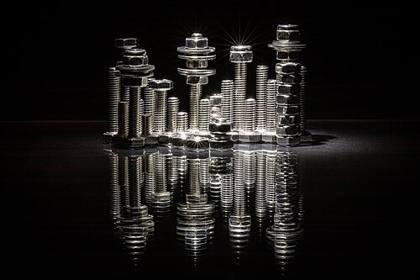
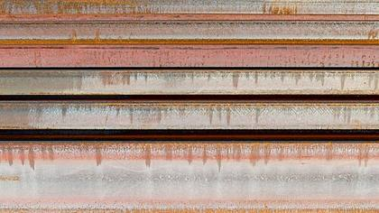
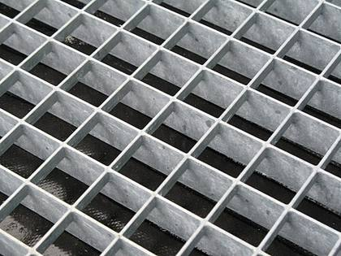

Conveyor belt components 3 items · 3 lot
Conveyor belt parts
Conveyor belt parts
Conveyor idler stations and idler rollers – various standard sizes (new, see inventory)
1 lotRef #218
Conveyor belt parts
Conveyor belt parts
Conveyor drum pulleys – various standard sizes (new, see inventory)
1 lotRef #216
Conveyor belt parts
Conveyor belt covers – various standard sizes (new, see inventory)
1 lotRef #217
Welding wire, fasteners & parts 3 items · 3 lot
Welding wire
Welding wire
ESAB OK Autrod 12.51 welding wire (new)
1 lotRef #215

Representative photoFasteners & small parts
Small-parts store: HILTI anchors, machine screws, fasteners, lifting accessories, bearings (unsorted)
1 lotRef #214
Fasteners & small parts
Fasteners & small parts
Stainless parts, hydraulic parts, trapezoidal sheet profile fillers (remaining stock)
1 lotRef #124
Steel stock & gratings 2 items · 2 lot

Representative photoSteel stock
Steel stock: flat bar, hollow sections, beams, plates, tubes, square and angle steel – various sizes and cuts, partly unopened deliveries
1 lotRef #220

Representative photoGratings & stair treads
Gratings and stair treads – various sizes (standard products)
1 lotRef #219
Summary of contents
By product type
| Product type | Items | Quantity (lot) | Share |
|---|---|---|---|
| Conveyor belt parts | 3 | 3 | 37.5% |
| Fasteners & small parts | 2 | 2 | 25.0% |
| Steel stock | 1 | 1 | 12.5% |
| Gratings & stair treads | 1 | 1 | 12.5% |
| Welding wire | 1 | 1 | 12.5% |
| Total | 8 | 8 | 100% |
By group
| Group | Items | Quantity (lot) | Share |
|---|---|---|---|
| Conveyor belt components | 3 | 3 | 37.5% |
| Welding wire, fasteners & parts | 3 | 3 | 37.5% |
| Steel stock & gratings | 2 | 2 | 25.0% |
| Total | 8 | 8 | 100% |